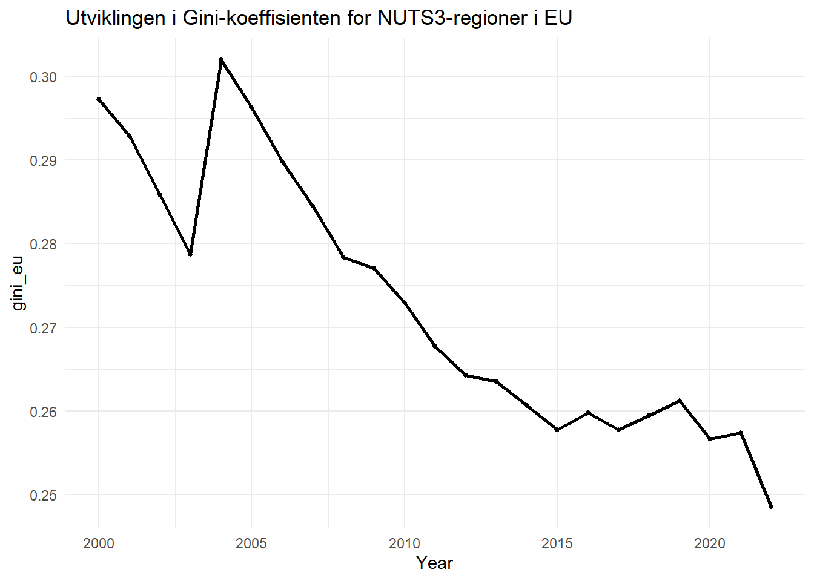
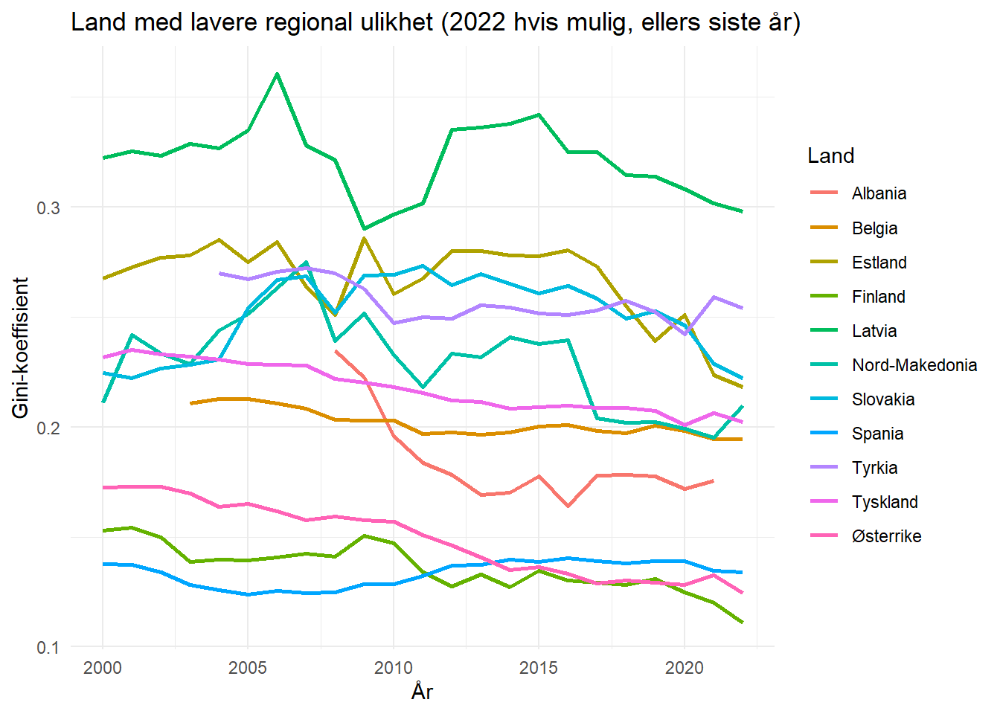
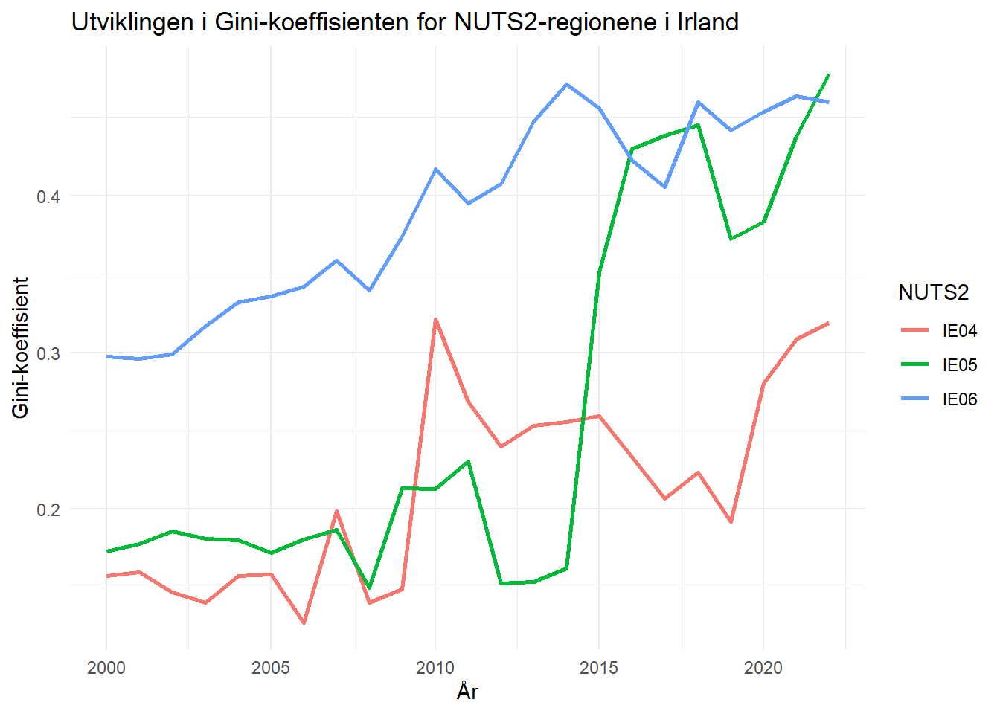
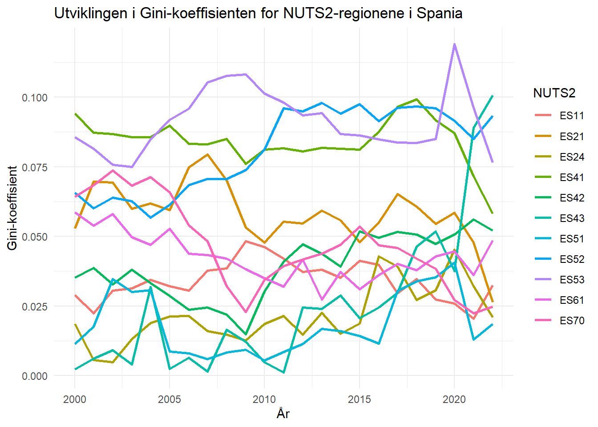
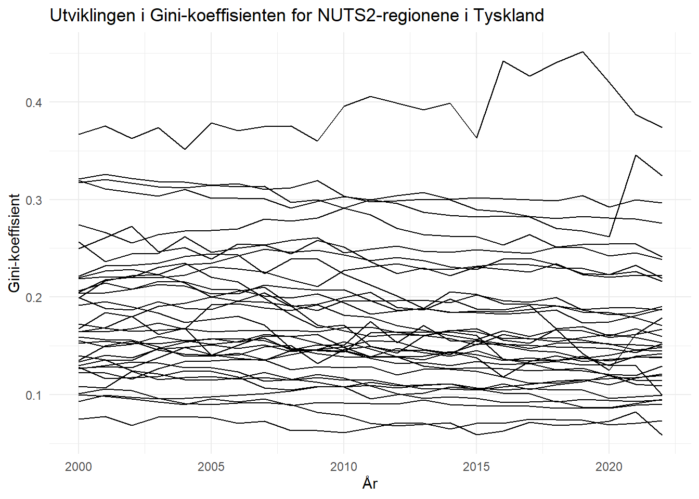
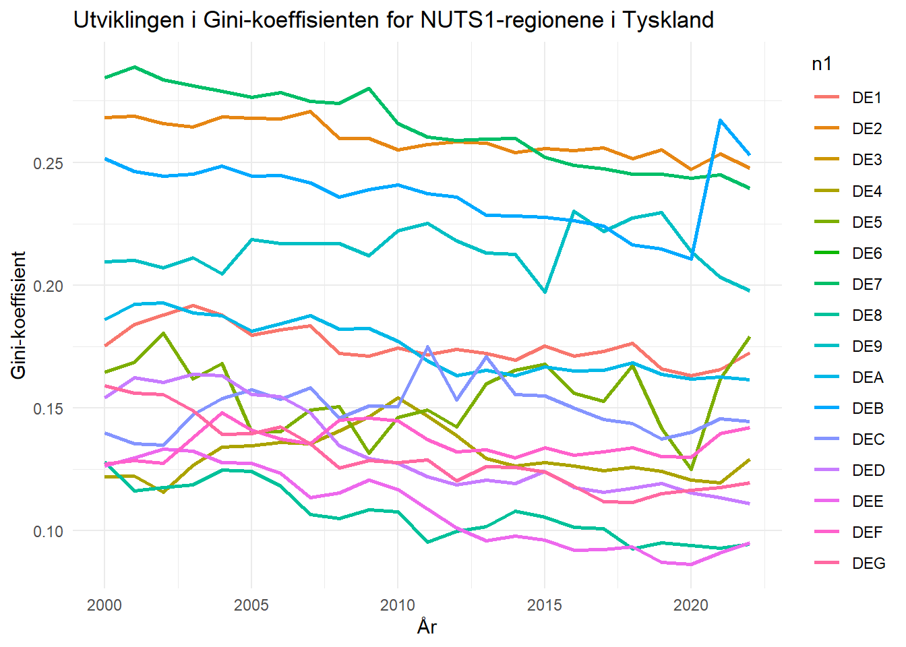
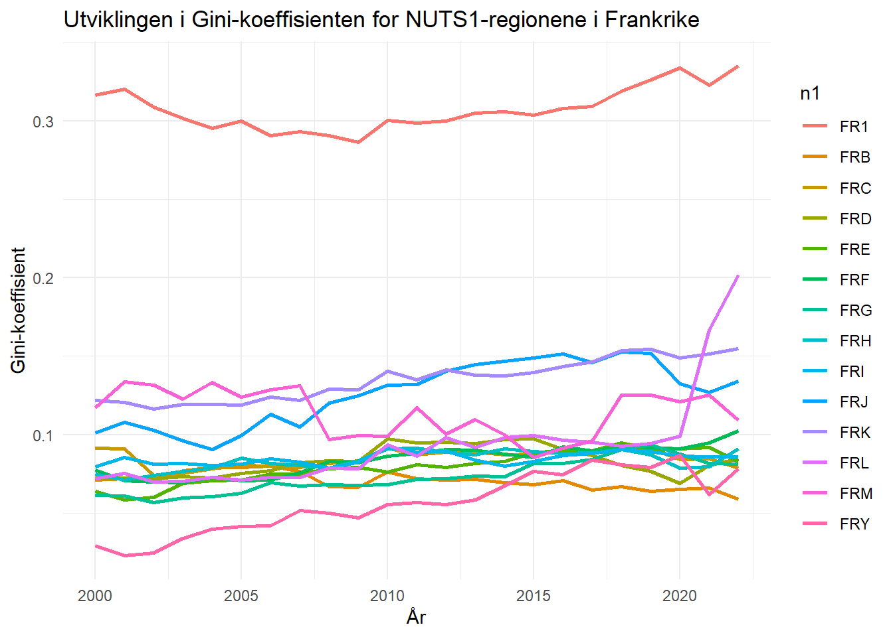
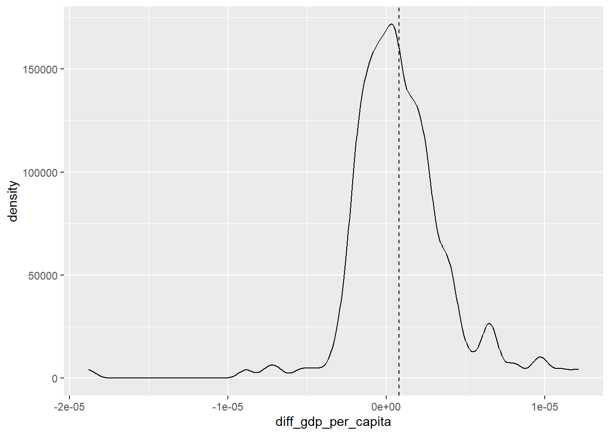

title | code |
|---|---|
Average annual population to calculate regional GDP data (thousand persons) by NUTS 3 region | nama_10r_3popgdp |
Gross domestic product (GDP) at current market prices by NUTS 3 region | nama_10r_3gdp |
Assignment 4:
Eu statistikk.
Toc. eurostat
GDP Nuts 3
concept | code | name |
|---|---|---|
freq | A | Annual |
unit | MIO_EUR | Million euro |
unit | EUR_HAB | Euro per inhabitant |
unit | EUR_HAB_EU27_2020 | Euro per inhabitant in percentage of the EU27 (from 2020) average |
unit | MIO_NAC | Million units of national currency |
unit | MIO_PPS_EU27_2020 | Million purchasing power standards (PPS, EU27 from 2020) |
unit | PPS_EU27_2020_HAB | Purchasing power standard (PPS, EU27 from 2020), per inhabitant |
unit | PPS_HAB_EU27_2020 | Purchasing power standard (PPS, EU27 from 2020), per inhabitant in percentage of the EU27 (from 2020) average |
concept | code | name |
|---|---|---|
geo | EU27_2020 | European Union - 27 countries (from 2020) |
geo | BE | Belgium |
geo | BE1 | Région de Bruxelles-Capitale/Brussels Hoofdstedelijk Gewest |
geo | BE10 | Région de Bruxelles-Capitale/Brussels Hoofdstedelijk Gewest |
geo | BE100 | Arr. de Bruxelles-Capitale/Arr. Brussel-Hoofdstad |
geo | BE2 | Vlaams Gewest |
geo | BE21 | Prov. Antwerpen |
geo | BE211 | Arr. Antwerpen |
geo | BE212 | Arr. Mechelen |
geo | BE213 | Arr. Turnhout |
[1] 30058 3# A tibble: 30,058 x 3
geo time gdp_n3
<chr> <chr> <dbl>
1 AL011 2008 551130000
2 AL011 2009 582160000
3 AL011 2010 664070000
4 AL011 2011 631170000
5 AL011 2012 717600000
6 AL011 2013 696860000
7 AL011 2014 735600000
8 AL011 2015 788630000
9 AL011 2016 801980000
10 AL011 2017 800660000
# i 30,048 more rows# A tibble: 21 x 3
geo time gdp_n3
<chr> <chr> <dbl>
1 IE053 2000 15837300000
2 IE053 2001 17506250000
3 IE053 2002 19395440000
4 IE053 2003 19687190000
5 IE053 2004 21000450000
6 IE053 2005 21776750000
7 IE053 2006 24081640000
8 IE053 2007 26086890000
9 IE053 2008 22705550000
10 IE053 2009 24012370000
11 IE053 2010 24085200000
12 IE053 2011 26235110000
13 IE053 2012 24346250000
14 IE053 2013 23345250000
15 IE053 2014 25127580000
16 IE053 2018 73687140000
17 IE053 2019 71965850000
18 IE053 2020 75581570000
19 IE053 2021 99064470000
20 IE053 2022 122163400000
21 IE053 2023 103989840000# A tibble: 24 x 3
geo time gdp_n3
<chr> <chr> <dbl>
1 IE053 2000 15837300000
2 IE053 2001 17506250000
3 IE053 2002 19395440000
4 IE053 2003 19687190000
5 IE053 2004 21000450000
6 IE053 2005 21776750000
7 IE053 2006 24081640000
8 IE053 2007 26086890000
9 IE053 2008 22705550000
10 IE053 2009 24012370000
11 IE053 2010 24085200000
12 IE053 2011 26235110000
13 IE053 2012 24346250000
14 IE053 2013 23345250000
15 IE053 2014 25127580000
16 IE053 2015 37267470000
17 IE053 2016 49407360000
18 IE053 2017 61547250000
19 IE053 2018 73687140000
20 IE053 2019 71965850000
21 IE053 2020 75581570000
22 IE053 2021 99064470000
23 IE053 2022 122163400000
24 IE053 2023 103989840000Population demo_r_pjanaggr3
oppgave 1
Søker i toc_txt for tabeller
oppgave 2
###(i)
title
<char>
1: Population density by NUTS 3 region
2: Population on 1 January by age group, sex and NUTS 3 region
3: Population on 1 January by broad age group, sex and NUTS 3 region
4: Population structure indicators by NUTS 3 region
5: Population change - Demographic balance and crude rates at regional level (NUTS 3)Â
6: Population by single year of age and NUTS 3 region
7: Population by marital status and NUTS 3 region
8: Population by family status and NUTS 3 region
9: Population by sex, citizenship and NUTS 3 region
10: Population by sex, age group, current activity status and NUTS 3 region
11: Total and active population by sex, age, employment status, residence one year prior to the census and NUTS 3 region
12: Population by sex, age group, educational attainment level, current activity status and NUTS 3 region
13: Population by sex, age group, household status and NUTS 3 region
14: Population by sex, age group, size of household and NUTS 3 region
15: Average annual population to calculate regional GDP data (thousand persons) by NUTS 3 region
16: Population by country of citizenship, age groups and NUTS 3 region
17: Population by country of citizenship, age groups, family status and NUTS 3 region
18: Population by country of citizenship, age groups, type of housing arrangements and NUTS 3 region
19: Population by country of birth, age groups and NUTS 3 region
20: Population by country of birth, age groups, household status and NUTS 3 region
21: Population by country of birth, age groups, type of housing arrangements and NUTS 3 region
22: Population by marital status, broad age groups and NUTS 3 region
23: Population by family status, broad age groups and NUTS 3 region
24: Population by size of the locality, age groups and NUTS 3 region
25: Population by size of the locality, housing arrangements and NUTS 3 region
26: Population by year of arrival in the country since 2010, age groups, groups of country of birth and NUTS 3 region
27: Population by year of arrival in the country, age groups, family status and NUTS 3 region
28: Population with Ukrainian citizenship by 5-year age group and NUTS 3 region
29: Population with Ukrainian citizenship by age and NUTS 3 region
30: Population with Ukrainian citizenship by 5-year age group, marital status and NUTS 3 region
31: Population on 1st January by age, sex, type of projection and NUTS 3 region
title
code
<char>
1: demo_r_d3dens
2: demo_r_pjangrp3
3: demo_r_pjanaggr3
4: demo_r_pjanind3
5: demo_r_gind3
6: cens_11ag_r3
7: cens_11ms_r3
8: cens_11fs_r3
9: cens_01rsctz
10: cens_01rapop
11: cens_01ramigr
12: cens_01rews
13: cens_01rhtype
14: cens_01rhsize
15: nama_10r_3popgdp
16: cens_21ctz_r3
17: cens_21ctzf_r3
18: cens_21ctzha_r3
19: cens_21cob_r3
20: cens_21cobhs_r3
21: cens_21cobha_r3
22: cens_21m_r3
23: cens_21f_r3
24: cens_21l_r3
25: cens_21lha_r3
26: cens_21argc_r3
27: cens_21arf_r3
28: cens_21ua_a5r3
29: cens_21ua_ar3
30: cens_21ua_msr3
31: proj_19rp3
code code
<char>
1: nama_10r_3popgdpFinner at koden er demo_r_pjanaggr3 for tabellen med forklarende tekst «Average annual population to calculate regional GDP data (thousand persons) by NUTS 3 regions»
###(ii) Last ned Data Structure Definition (DSD) for denne tabellen.
(iii) (iv) og (v)
Tre av oppgavene i en, laster ned dataen og gi den navnet pop, plukker ut årene fra 2000 til 2023 og den totale befolkningen, begrenser datasettet til NUTS3 regioner og konverterer settet til en tibble.
[1] 30038 3Oppgave 3
Slå sammen GDP-data (gdp) og befolkingsdata (pop)
Kontrollerer:
[1] 30061 4# A tibble: 6 x 4
geo time gdp_n3 pop_n3
<chr> <chr> <dbl> <dbl>
1 AL011 2008 551130000 155390
2 AL011 2009 582160000 150430
3 AL011 2010 664070000 146140
4 AL011 2011 631170000 142580
5 AL011 2012 717600000 139340
6 AL011 2013 696860000 136020Gjør følgende tilpasning av gdp_pop:
Regner ut gdp per capita og gir den et nytt navn:
Kontrollerer:
[1] 27584 5Sjekker om vi mangler data for enkelte år for noen soner:
[1] 0 5Var ikke noe mer NA-verdier igjen i gdp_pc_n3 Kvitter oss med andre objekter for å rydde litt ettersom vi bare skal bruke eu_data videre:
Oppgave 4
Endrer ny navn på geo til n3 og legger til variablene n2, n1 og nc fra variabelen n3.
Oppgave 5
Undersøk om vi har noen NUTS 3 soner med pop_n3 lik 0. Hvis det er noen så endre disse til NA. Undersøker:
# A tibble: 0 x 8
# i 8 variables: n3 <chr>, time <chr>, gdp_n3 <dbl>, pop_n3 <dbl>,
# gdp_pc_n3 <dbl>, n2 <chr>, n1 <chr>, nc <chr>Fant ingen rader med 0 og vi går videre, trenger ikke å endre noe til NA.
Oppgave 6
Sjekker hvor mange NUTS3 soner vi har i hvert land, tar en strukturkontroll:
# A tibble: 29 x 2
nc num_nuts3
<chr> <int>
1 DE 400
2 IT 107
3 FR 100
4 TR 81
5 PL 73
6 ES 59
7 EL 52
8 BE 44
9 RO 42
10 AT 35
# i 19 more rowsOppgave 7
Sjekker summary for gdp_pc_n3 for å se om hva som er har den største og minste verdien og om det er noen NA:
Min. 1st Qu. Median Mean 3rd Qu. Max.
2214 14994 21144 22782 27952 180416 Minste verdien er 2 214, mens max er på 180 416. Får ingen NA.
Oppgave 8
Bruk case_when() for å legge til variabelen nc_name før vi går videre. Østerrike for AT, Belgia for BE etc..
Kontrollerer:
# A tibble: 29 x 2
nc_name nc
<chr> <chr>
1 Albania AL
2 Østerrike AT
3 Belgia BE
4 Bulgaria BG
5 Kypros CY
6 Tjekkia CZ
7 Tyskland DE
8 Danmark DK
9 Estland EE
10 Hellas EL
11 Spania ES
12 Finland FI
13 Frankrike FR
14 Kroatia HR
15 Ungarn HU
16 Irland IE
17 Italia IT
18 Litauen LT
19 Luxemburg LU
20 Latvia LV
21 Nord-Makedonia MK
22 Malta MT
23 Polen PL
24 Romania RO
25 Serbia RS
26 Sverige SE
27 Slovenia SI
28 Slovakia SK
29 Tyrkia TR Beregning av Gini på NUTS2, NUTS1 og NUTSc nivå
Vi skal nå beregne Gini for hvert år på NUTS2, NUTS1, NUTSc og EU nivå. Vi vil beregne Gini utfra gdp_pc_n3 og pop_n3 i NUTS3 for alle aggregeringsnivåene. Gini-koeffisient er tradisjonelt et mål på inntektsforskjeller. Her benytter vi målet for å undersøke hvor jevnt verdiskapningen er fordelt mellom regioner. En Gini-koeffisient nær null vil altså her bety at verdiskapingen er jevnt fordelt mellom regionene i et land. En Gini-koeffisient nær 1 vil det derimot bety at det meste av verdiskapingen i et land er sentralisert til en spesifikk NUTS3 region.
Gini- koeffisient for NUTS2
Oppgave 9
Beregner Gini-koeffisienter på NUTS2 nivå:
Kontrollerer:
gini_n2 num_reg_n2 pop_n2 gdp_n2
Min. :0.00038 Min. : 1.000 Min. : 25740 Min. :6.814e+08
1st Qu.:0.06753 1st Qu.: 2.000 1st Qu.: 992733 1st Qu.:1.595e+10
Median :0.10893 Median : 4.000 Median : 1529210 Median :3.030e+10
Mean :0.12316 Mean : 4.819 Mean : 1947314 Mean :4.679e+10
3rd Qu.:0.16290 3rd Qu.: 6.000 3rd Qu.: 2361818 3rd Qu.:5.388e+10
Max. :0.47793 Max. :23.000 Max. :15874440 Max. :7.083e+11
NA's :856
gdp_pc_n2
Min. : 3157
1st Qu.:15317
Median :21839
Mean :23011
3rd Qu.:28793
Max. :96746
Får de samme tallene som kontrollen i oppgaven. Vi ser at vi har et spenn i Gini-koeffisienten på NUTS2 nivå fra 0.0004 til 0.4779. Vi har også 856 NAs. Vi ser også at antall NUTS3 i NUTS2 regioner spenner fra 1 til 23.
Oppgave 10
Finner observasjoner med Gini < 0.001
# A tibble: 4 x 10
n2 time n1 nc nc_name gini_n2 pop_n2 gdp_n2 gdp_pc_n2 num_reg_n2
<chr> <chr> <chr> <chr> <chr> <dbl> <dbl> <dbl> <dbl> <int>
1 DK02 2019 DK0 DK Danmark 0.000977 837050 2.32e10 27678. 2
2 ITF5 2006 ITF IT Italia 0.000545 588300 1.11e10 18935. 2
3 PL43 2011 PL4 PL Polen 0.000854 1010350 1.43e10 14181. 2
4 SK03 2004 SK0 SK Slovakia 0.000379 1352530 1.35e10 9967. 2Får opp 4 obervasjoner Se så på kjennetegnet ved disse regionene:
# A tibble: 4 x 7
nc_name n2 time gini_n2 num_reg_n2 pop_n2 gdp_pc_n2
<chr> <chr> <chr> <dbl> <int> <dbl> <dbl>
1 Danmark DK02 2019 0.000977 2 837050 27678.
2 Italia ITF5 2006 0.000545 2 588300 18935.
3 Polen PL43 2011 0.000854 2 1010350 14181.
4 Slovakia SK03 2004 0.000379 2 1352530 9967.Det som blir observert her er at de fleste har få NUTS3-regioner i sine NUTS2, noe som gjør at alle NUTS3 regionene er omtrent lik gdp_pc_n3 eller om det bare er en region. Derfor får disse observasjonene en ekstremt lav Gini.
Oppgave 11
Beregn Gini-koeffsienter på NUTS1-nivå, der gdp_pc_n2 eller pop_n2 ikke skal brukes som grunnlag:
Kontrollerer:
gini_n1 num_reg_n1 gdp_n1 pop_n1
Min. :0.01601 Min. : 1.00 Min. :6.814e+08 Min. : 25740
1st Qu.:0.09123 1st Qu.: 6.00 1st Qu.:4.256e+10 1st Qu.: 2689490
Median :0.13959 Median : 9.00 Median :7.888e+10 Median : 3934280
Mean :0.15364 Mean :12.22 Mean :1.187e+11 Mean : 4938603
3rd Qu.:0.18790 3rd Qu.:14.00 3rd Qu.:1.411e+11 3rd Qu.: 5992840
Max. :0.42934 Max. :96.00 Max. :7.287e+11 Max. :18031860
NA's :177
gdp_pc_n1
Min. : 3802
1st Qu.:15750
Median :22295
Mean :23523
3rd Qu.:29340
Max. :90512
Får de samme tallene som oppgaven. Vi ser at vi har et spenn i Gini-koeffisienten på NUTS1 nivå fra 0.016 til 0.429. Antall NAs er nå 177. Vi ser at antall NUTS3 i NUTS1 regioner spenner helt fra 1 til 96.
Oppgave 12
Beregn Gini-koeffisienter på nasjonsnivå Måler hvor jevnt verdiskapningen er fordelt mellom regioner innen samme land:
Kontrollerer
gini_nc num_reg_nc gdp_nc pop_nc
Min. :0.1111 Min. : 1.00 Min. :5.892e+09 Min. : 386200
1st Qu.:0.1742 1st Qu.: 8.00 1st Qu.:4.350e+10 1st Qu.: 2810745
Median :0.2094 Median : 20.00 Median :1.516e+11 Median : 6984230
Mean :0.2149 Mean : 42.37 Mean :4.114e+11 Mean :17122006
3rd Qu.:0.2553 3rd Qu.: 44.00 3rd Qu.:3.447e+11 3rd Qu.:11352985
Max. :0.3991 Max. :400.00 Max. :3.550e+12 Max. :84979990
NA's :46
gdp_pc_nc
Min. : 4854
1st Qu.:15103
Median :22224
Mean :23761
3rd Qu.:29362
Max. :90512
Får samme som oppgaven. På landsnivå varierer Gini fra 0,1111 til 0,3991. Antall NUTS3 regioner per land varierer fra 1 til 400.
“Nestete” datastrukturer
Vi vil nå «neste» de ulike gini_NUTS* datasettene og sette dem sammen til et nestet datasett eu_data_nestet som innholder alle dataene ovenfor i en fint ordnet struktur.
Oppgave 13
“neste” dataene på NUTS3 nivå
# A tibble: 29 x 3
nc nc_name NUTS3_data
<chr> <chr> <list>
1 AL Albania <tibble [168 x 7]>
2 AT Østerrike <tibble [805 x 7]>
3 BE Belgia <tibble [880 x 7]>
4 BG Bulgaria <tibble [644 x 7]>
5 CY Kypros <tibble [23 x 7]>
6 CZ Tjekkia <tibble [322 x 7]>
7 DE Tyskland <tibble [9,200 x 7]>
8 DK Danmark <tibble [253 x 7]>
9 EE Estland <tibble [115 x 7]>
10 EL Hellas <tibble [1,196 x 7]>
# i 19 more rowsOppgave 14
«Nest» dataene på NUTS2 nivå. Legg resultatet gini_NUTS2_nest. Bruk .key = “NUTS2_data”.
Oppgave 15
«Nest» dataene på NUTS1 nivå. Legg resultatet gini_NUTS1_nest.
Oppgave 16
«Nest» dataene på nasjonsnivå. Legg resultatet i gini_NUTSc_nest.
Oppgave 17
«Nest» dataene på EU nivå, dvs. Gini for samtlige NUTS3 regioner hvert år. Legger resultatet i gini_NUTSeu_nest. _nest er her litt misvisende siden vi ikke gjør noen nesting.
Oppgave 18
Vis utviklingen i Gini-koeffisienten for NUTS3 regioner i EU vha. et linjeplot.

Oppgave 19
«The EU’s Structural Funds and Cohesion Fund direct funding to NUTS level 2 regions based on their GDP (PPS) per capita in comparison to the EU average: less developed regions (less than 75%), transition regions (between 75% and 90% and more developed regions (over 90%). For the period 2014–20, EUR 351 billion will be invested in the EU’s regions with most being directed to the less developed regions.»
Basert på plottet fra foregående oppgave diskuter (veldig!) kort om tiltaket ser ut til å virke: Plottet gir støtte til at regional ulikhet har avtatt over tid i EU, noe som er forenlig med at kohesjonspolitikken kan ha hatt effekt, men analysen kan ikke fastslå årsakssammenheng.
Oppgave 20
Ta gini_n3_nestsom utgangspunkt og bruk left_join() til å legge til datasettene gini_NUTS2_nest, gini_NUTS1_nest og gini_NUTSc_nest.
slette alle objekter utenom eu_data og eu_data_nested.
#Plots som viser utvikling ## Oppgave 21 Lag et linjeplot i ggplot som viser utviklingen i Gini-koeffisient på nasjonsnivå for de 29 landene vi har med.
Får plotten:

Oppgave 22
Lager en sortert tabell for Gini i år 2022 som gjør det litt lettere å se hvilken linje som hører til hvilket land.
Land | Gini-koeffisient |
|---|---|
Irland | 0.3990713 |
Bulgaria | 0.3172612 |
Romania | 0.2998082 |
Latvia | 0.2981280 |
Ungarn | 0.2692496 |
Serbia | 0.2637424 |
Tyrkia | 0.2540632 |
Polen | 0.2302756 |
Malta | 0.2294089 |
Litauen | 0.2259366 |
Slovakia | 0.2222795 |
Danmark | 0.2222566 |
Estland | 0.2180376 |
Nord-Makedonia | 0.2095793 |
Kroatia | 0.2085360 |
Hellas | 0.2077325 |
Frankrike | 0.2062529 |
Tjekkia | 0.2050454 |
Tyskland | 0.2024255 |
Belgia | 0.1945446 |
Italia | 0.1907755 |
Slovenia | 0.1690681 |
Spania | 0.1340889 |
Sverige | 0.1263810 |
Østerrike | 0.1244962 |
Finland | 0.1111034 |
Kypros | |
Luxemburg |
Oppgave 23


Oppgave 24
Vis vha. et linjeplot utviklingen i gini-koeffisient for NUTS2 regionene i Irland.

Hvordan er verdiskapningen fordelt mellom regionene i ulike land?
Spania hadde i år 2022 en Gini-koeffisient lik 0,134 som skulle tilsi en nokså jevn fordeling av økonomisk aktivitet mellom regionene.
Oppgave 25
Lag et line-plot som viser utviklingen i Gini-koeffisientene for NUTS2 regionene i Spania.
Kontrollerer regionene:
# A tibble: 11 x 1
n2
<chr>
1 ES11
2 ES21
3 ES24
4 ES41
5 ES42
6 ES43
7 ES51
8 ES52
9 ES53
10 ES61
11 ES70 Lager så linjeplottet:

Oppgave 26
Lag et line-plot som viser utviklingen i Gini-koeffisientene for NUTS1 regionene i Spania.

Tyskland
Oppgave 27
Lag et line-plot som viser utviklingen i Gini-koeffisient for NUTS2 regionene i Tyskland. Dropp gjerne farger. Det er så mange regioner at de er vanskelig å skille.

Vi ser at Gini-koeffisientene spenner fra ca. 0.03 til over 0.45. Det ser altså ut til å være store forskjeller mellom NUTS2 regionene i Tyskland. Noen NUTS2 soner ser ut til å være relativt ensartet mhp. verdiskapning, mens andre er preget av store forskjeller mellom NUTS3 regionene. Hvor i landet er de plassert de regionene som har de største regionale forskjellene? Figuren viser at Gini-koeffisientene for NUTS2-regionene i Tyskland varierer fra om lag 0,03 til over 0,45. Dette peker på betydelige forskjeller i graden av intern regional ulikhet. Regioner med lave Gini-verdier fremstår som relativt homogene når det gjelder verdiskaping mellom NUTS3-områder, mens regioner med høye Gini-verdier er kjennetegnet av store interne variasjoner. De mest markante regionale ulikhetene finnes i hovedsak i og rundt de største økonomiske sentrene og storbyregionene, særlig i de vestlige og sørlige delene av landet, hvor sterke kjerneområder sameksisterer med mindre utviklede omkringliggende regioner.
Oppgave 28
Er det samme er tilfelle når vi ser på de større regionene i Tyskland (NUTS1)?

n1 | gini_n1 | num_reg_n1 |
|---|---|---|
DEB | 0.2529 | 36 |
DE2 | 0.2477 | 96 |
DE7 | 0.2394 | 26 |
DE9 | 0.1978 | 45 |
DE5 | 0.1790 | 2 |
DE1 | 0.1726 | 44 |
DEA | 0.1616 | 53 |
DEC | 0.1445 | 6 |
DEF | 0.1421 | 15 |
DE4 | 0.1291 | 18 |
DEG | 0.1196 | 22 |
DED | 0.1111 | 13 |
DEE | 0.0953 | 14 |
DE8 | 0.0947 | 8 |
DE3 | 1 | |
DE6 | 1 |
Frankrike
Oppgave 29

Oppgave 30
Lag en tabell som viser de 6 NUTS1 sonene i Frankrike som hadde høyest Gini-koeffisient i 2022. Hvilken sone har suverent høyest Gini-koeffisient og hvor ligger denne i landet?
n1 | gini_n1 |
|---|---|
FR1 | 0.3354 |
FRL | 0.2018 |
FRK | 0.1549 |
FRJ | 0.1341 |
FRM | 0.1091 |
FRF | 0.1025 |
Tabellen viser at Île-de-France (FR1) har suverent høyest Gini-koeffisient blant franske NUTS1-regioner i 2022. Denne regionen ligger i nordlige deler av Frankrike og omfatter Paris og hovedstadsområdet.
Oppgave 31
Vi ser at for Frankrike er det en region som har klart større forskjeller mht. vekst (verdiskapning) enn de andre. Sjekk NUTS3 regionenen i denne regionen nærmere vha. linjeplot og lag en tabell som viser gdp_pc_n3 for de seks sonene.
# A tibble: 1 x 13
nc nc_name NUTS3_data n2 time n1 gini_n2 pop_n2 gdp_n2 gdp_pc_n2
<chr> <chr> <list> <chr> <chr> <chr> <dbl> <dbl> <dbl> <dbl>
1 FR Frankrike <tibble> FR10 2022 FR1 0.335 1.24e7 7.08e11 57222.
# i 3 more variables: num_reg_n2 <int>, NUTS1_data <list>, NUTSc_data <list>Ser at det er 8 soner i denne regionen isteden for 6 som det står i løsningsforslaget

n3 | gdp_pc_n3 |
|---|---|
FR101 | 113,523 |
FR105 | 101,546 |
FR107 | 38,625 |
FR106 | 37,017 |
FR103 | 36,897 |
FR104 | 36,840 |
FR102 | 29,967 |
FR108 | 28,995 |
Oppgave 32
Kan vi utfra foregående plot og tabell si noe om årsaken til at FR1 har så høy Ginikoeffisient?
Ja. Plottet og tabellen viser at FR1 (Île-de-France) har svært store forskjeller i BNP per innbygger mellom NUTS3-regionene. Verdiskapingen er sterkt konsentrert i Paris og de sentrale delene av regionen, mens omkringliggende områder ligger betydelig lavere. Dette gir høy intern ulikhet og dermed en høy Gini-koeffisient.
Enkle modeller
Oppgave 33
Lag datasett for endringer i gdp_per_capita og gini_nuts2.
[1] 218av disse har vi kunnet beregne Gini-koeffisient for. Vi har altså 38 NUTS2 soner som bare inneholder én NUTS3 sone.
Oppgave 34
Bruk modellen diff_gini_nuts2 ~ diff_gdp_per_capita på hver av de 256 (218) NUTS2 regionene vha. en anonym funksjon som «mappes» (vha. map()) på «list-column» NUTS2_diff. Legg resultatet i en variabel modell.
Oppgave 35
Hent ut koeffisientene fra de 256 (218) modellene og legg resultatet i variabelen mod_coeff. Gjør dette ved å «mappe» funksjonen coeff() på list_column modell.
Oppgave 36
Bruker glance() funksjonen fra broom pakken og «map» denne på modell variabelen for å generere «model summary». Legg resultatet i en variabel mod_sum.
Oppgave 37
Hvilken NUTS1 sone har høyest 𝑅2 for vår modell og hvilken sone har lavest?
# A tibble: 3 x 7
# Groups: nc_name, n2 [3]
nc_name n2 NUTS2_diff modell `(Intercept)` diff_gdp_per_capita
<chr> <chr> <list> <list> <dbl> <dbl>
1 Polen PL82 <tibble [92 x 6]> <lm> -0.0364 0.00000669
2 Tyskland DED5 <tibble [69 x 6]> <lm> 0.00344 -0.00000454
3 Belgia BE22 <tibble [60 x 6]> <lm> 0.129 -0.00000312
# i 1 more variable: mod_sum <tibble[,12]># A tibble: 3 x 7
# Groups: nc_name, n2 [3]
nc_name n2 NUTS2_diff modell `(Intercept)` diff_gdp_per_capita
<chr> <chr> <list> <list> <dbl> <dbl>
1 Italia ITH3 <tibble [160 x 6]> <lm> 0.00374 -0.0000000159
2 Tyskland DE26 <tibble [276 x 6]> <lm> -0.00903 0.0000000121
3 Tyskland DE22 <tibble [276 x 6]> <lm> -0.0500 0.0000000523
# i 1 more variable: mod_sum <tibble[,12]>Oppgave 38
Hvilken NUTS1 sone har høyest koeffisient for diff_gdp_per_capita?
# A tibble: 3 x 7
# Groups: nc_name, n2 [3]
nc_name n2 NUTS2_diff modell `(Intercept)` diff_gdp_per_capita
<chr> <chr> <list> <list> <dbl> <dbl>
1 Bulgaria BG34 <tibble [92 x 6]> <lm> -0.0759 0.0000122
2 Bulgaria BG42 <tibble [115 x 6]> <lm> -0.210 0.0000111
3 Tyrkia TRA2 <tibble [76 x 6]> <lm> -0.0439 0.0000101
# i 1 more variable: mod_sum <tibble[,12]>NUTS2-regionen med høyest koeffisient: BG34 i Bulgaria.
Oppgave 39
Hvor mange av de 256 (218) koeffisientene er signifikante på 5% nivå?
[1] 162 18Ut fra tibbelen får vi et antall på 162 av de totale 218 som er statistisk signifikante på 5 % nivå. Dette betyr at disse regionene har en sammenheng mellom endringer i BNP per innbygger og endringer i regional ulikheter som kan måles med data.
Oppgave 40
Bruk ggplot til å lage et «density plot» av variabelen diff_gdp_per_capita. Legg inn en vertikal linje for gjennomsnitt diff_gdp_per_capita. (Hint! Husk argumentet na.rm = TRUE.). Resultatet skal bli som i plottet under.

Oppgave 41
Hvor mange av de 256 (218) regrersjonskoeffisientene for diff_gdp_per_capita er positive?
[1] 132 7Svaret viser et flertall av NUTS2-regionene på 132 som er om lag 61 %, som er sammenhengen mellom endringer i BNP per innbygger og endringer i regional ulikhet positiv.
Oppgave 42
# A tibble: 1 x 2
mean_coef median_coef
<dbl> <dbl>
1 0.000000816 0.000000528Oppgave 43
Utfør en enkel t-test for å teste om diff_gdp_per_capita er signifikant større enn 0. Er diff_gdp_per_capita signifikant større enn 0?
One Sample t-test
data: coef_tidy$estimate
t = 3.7658, df = 217, p-value = 0.0001069
alternative hypothesis: true mean is greater than 0
95 percent confidence interval:
4.583272e-07 Inf
sample estimates:
mean of x
8.16482e-07 Panel modell
Oppgave 44
Bruk funksjonen plm() fra pakken plm til å utføre en panel-regresjon på dataene. For argumentet index kan dere bruke index = c(“n3”, “time”). Bruk samme enkle modell som ovenfor dvs. diff_gini_nuts2 ~ diff_gdp_per_capita. Putt resultatet av regresjonen i et objekt p_mod.
Oppgave 45
Vis summary() for p_mod og tolk resultatet.
Oneway (individual) effect Within Model
Call:
plm(formula = "diff_gini_nuts2 ~ diff_gdp_per_capita", data = unnest(select(NUTS2_diff,
n2, NUTS2_diff), NUTS2_diff), index = c("n3", "time"))
Unbalanced Panel: n = 1186, T = 13-23, N = 26700
Residuals:
Min. 1st Qu. Median 3rd Qu. Max.
-37.335219 -0.559292 -0.035798 0.505712 27.300139
Coefficients:
Estimate Std. Error t-value Pr(>|t|)
diff_gdp_per_capita 3.9320e-07 2.4694e-08 15.923 < 2.2e-16 ***
---
Signif. codes: 0 '***' 0.001 '**' 0.01 '*' 0.05 '.' 0.1 ' ' 1
Total Sum of Squares: 78060
Residual Sum of Squares: 77291
R-Squared: 0.0098397
Adj. R-Squared: -0.036189
F-statistic: 253.536 on 1 and 25513 DF, p-value: < 2.22e-16Fixed effects-modellen viser en positiv og statistisk signifikant sammenheng mellom vekst i BNP per innbygger og endring i Gini-koeffisienten. Dette indikerer at økonomisk vekst innen regioner i snitt er assosiert med økt regional ulikhet. Samtidig er modellens forklaringskraft lav, noe som tilsier at andre faktorer også spiller en viktig rolle.
Oppgave 46
En alternativ måte å finne summary() for p_mod er gjengitt i chunk-en nedenfor. Forklar hva som blir gjort her og sammenlign med resultatet av en ordinær summary().
Oneway (individual) effect Within Model
Note: Coefficient variance-covariance matrix supplied: function(x) plm::vcovHC(x, method = "white2")
Call:
plm(formula = "diff_gini_nuts2 ~ diff_gdp_per_capita", data = unnest(select(NUTS2_diff,
n2, NUTS2_diff), NUTS2_diff), index = c("n3", "time"))
Unbalanced Panel: n = 1186, T = 13-23, N = 26700
Residuals:
Min. 1st Qu. Median 3rd Qu. Max.
-37.335219 -0.559292 -0.035798 0.505712 27.300139
Coefficients:
Estimate Std. Error t-value Pr(>|t|)
diff_gdp_per_capita 3.9320e-07 2.7778e-08 14.155 < 2.2e-16 ***
---
Signif. codes: 0 '***' 0.001 '**' 0.01 '*' 0.05 '.' 0.1 ' ' 1
Total Sum of Squares: 78060
Residual Sum of Squares: 77291
R-Squared: 0.0098397
Adj. R-Squared: -0.036189
F-statistic: 200.369 on 1 and 1185 DF, p-value: < 2.22e-16